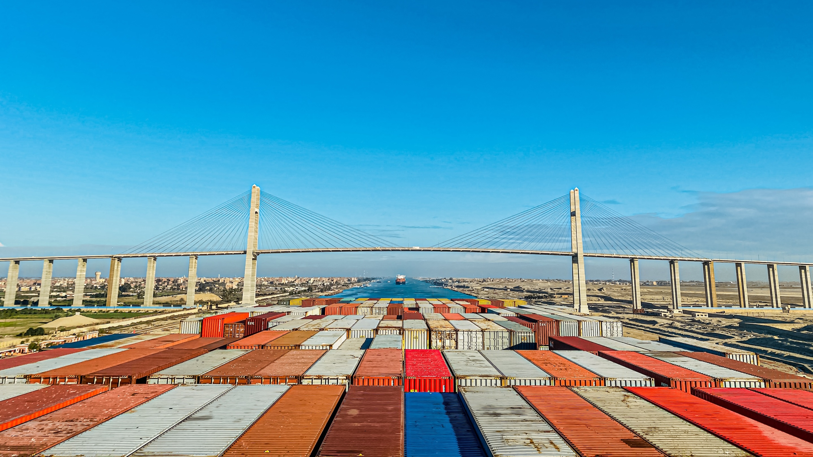

Authored a comprehensive four-page feature article and provided the front-cover photography for the December 2022 issue of Maersk’s Fleet Management & Technology Newsletter. The featured photograph captured the quiet focus of operational watchkeeping at sea, earning Highly Commended honors in the international ITF Life at Sea competition.
View Project Repository →Contributed written reflections, poetry, and shipboard photography documenting the realities of cadet training and seafarer mental health during extended periods away from home. Selected for inclusion in two consecutive international anthologies published by the ITF Seafarers' Trust.
View Project Repository →Awarded 3rd place in the Danish Photo Competition for Seafarers 2021 for capturing crew camaraderie during offshore recreation. Sea Health & Welfare subsequently featured the photography on its official 2022 Day of the Seafarer campaign flyer and selected it as the front cover image for the 2023 seafarer calendar.
View Project Repository →Named Grand Winner in the 2023 IMarEST Marine Professionals at Work Photography Competition. The winning entry, accompanied by a descriptive narrative, portrayed the dedication and technical precision of shipboard technical ratings during early morning maintenance routines.
View Project Repository →Featured in IMarEST’s Career Corner series, detailing operational watchkeeping responsibilities aboard Maersk container vessels, passage planning practices, and actionable career development advice for aspiring deck officers transitioning from academy studies to shipboard duty.
View Project Repository →